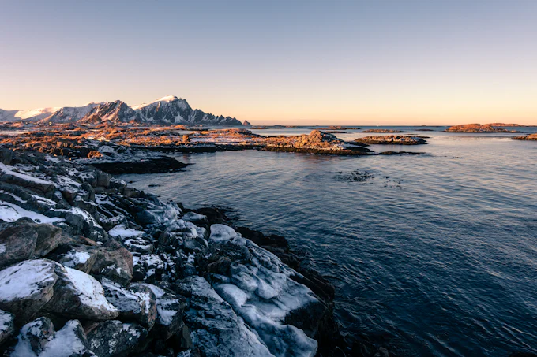
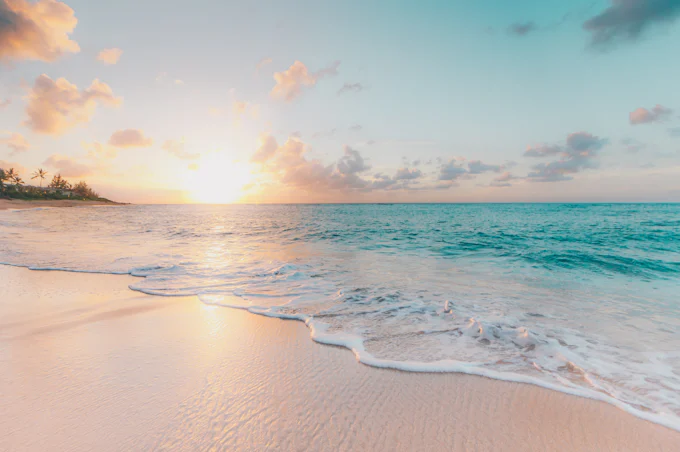
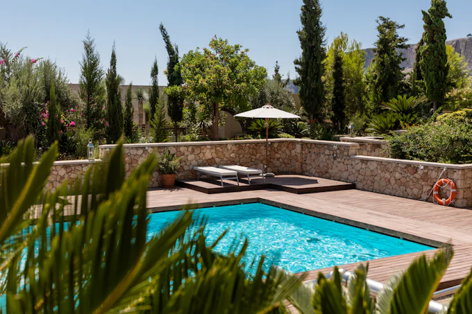
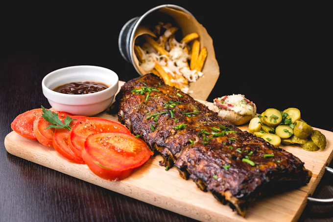

Grenadines by Starlight
Navigating the coral barrier of Tobago Cays where green sea turtles graze in turquoise shallows.
Read ArticleHow dry volcanic ash soils on Santorini produce crisp, mineral-forward Assyrtiko wines that have captivated seafaring travelers since Bronze Age antiquity. Accompany Executive Chef Moreau as he scouts wild capers and dry-farmed island vineyards.
Read our culinary exploration into the centuries-old Aegean techniques of sun-drying grapes and preserving sheep cheeses in olive wood vats.
Read Full MonographNavigating suite categories, all-inclusive inclusions, and shore expedition planning with poise.
Comparing mid-ship balance versus aft panorama terraces across different ocean routes.
Read ChapterUnderstanding the etiquette of garment pressing, in-suite dining requests, and bespoke port scheduling.
Read ChapterHow all-inclusive vintages are selected and paired with nightly six-course degustation menus.
Read ChapterNaval architecture secrets that make boutique ocean travel extraordinarily stable, silent, and refined.
How computer-controlled gyroscopic fins neutralize roll even when anchored in open ocean bays.
Read InsightEngineering techniques that isolate engine vibrations to ensure whispering silence in all guest suites.
Read InsightWhy maritime barometric pressure and sea air enhance brioche and mineral notes in vintage Grand Crus.
Read InsightFrom linen separates for sunlit Mediterranean port walks to bespoke cashmere wraps for brisk evening deck stargazing, packing for a luxury voyage is an exercise in timeless tailoring.
Learn how to transition seamlessly between daytime resort elegance and formal gala evenings, complete with our downloadable packing checklist.
Download Packing Checklist
Snapshots of the serene rituals that define a sea day aboard Aurelia Oceanic Voyages.

Complimentary Bellinis and hand-carved Jamón Ibérico on the open aft deck as the ship sets sail.
Explore Ritual
Greet the rising sun in our heated seawater pool with fresh cold-pressed green juices poolside.
Explore Ritual
An intimate afternoon in the galley learning the art of hand-pinched tortellini and truffle reductions.
Explore RitualRead essays from voyages navigating the Caribbean, Arctic, and East Asia.
Navigating the coral barrier of Tobago Cays where green sea turtles graze in turquoise shallows.
Read ArticleWitnessing ancient 400-year-old ice calving into icy bays from our silent electric bow deck.
Read ArticleContemporary art installations, historic pottery villages, and cedar-scented island shrines.
Read ArticleFilter through our rich repository of ocean monographs and traveler dispatches.
Receive our lavish 120-page linen-bound seasonal monograph delivered directly to your private residence, or explore available staterooms for forthcoming voyages.